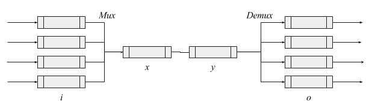

2017-08-14 »
Things we (finally) know about network queues

How big should your queue be, and what should you do when it fills up? Many times, we implement or even deploy a networking system before we have answered those questions. Luckily, recent research has given us some guidelines. Here's what we know:
-
There are two ways to deal with a full queue: drop packets, or throttle incoming packets (backpressure).
-
Most network queues are mostly empty. The only exceptions are caused by burstiness (uneven incoming packet rates), and bottlenecks (exactly one slowest queue per network path).
-
Queues exist only to handle burstiness. If traffic flowed at a constant rate, every queue would be empty except the bottleneck, which would be full (bufferbloat), no matter its limit.
- Corollary: limit queue length to a statistically large burst (eg. 99th percentile).
-
Backpressure may be implicit. For example, if an ethernet driver is slow to pull packets from the Linux netdev queue x into the device's ring buffer y, then there is implicit backpressure from y to x even though no signal is sent to x.
-
Dropping packets should be intentional. An ethernet device will tail-drop incoming packets if its (usually fixed-size) receive ring buffer is exhausted, leaving software no control over what to drop. To take control, we could add a big software queue and unload the device's receive ring buffer to it as quickly as possible.
-
Burstiness can come from inside a router or switch. Examples: It's more CPU-efficient to process 100 packets at a time instead of one. TSO/GSO are getting popular, and can produce, eg., bursts of 40+ packets from a single 64k buffer. (Pacing leaves time between 64k bursts.) Frame aggregation does the same on wifi. (Wifi nodes can negotiate reduced aggregation sizes if their buffers are small.)
-
Use backpressure when muxing. In our diagram, from i to x, it is best to use backpressure from x to i so that i can drop packets from individual queues.
- Prioritized handling of incoming packets is equivalent to muxing. Multiple priority queues are drained by a single CPU, creating an implicit single queue. Draining them too slowly creates implicit backpressure.
-
Drop packets when demuxing. From y to o, it's best to drop packets at o rather than use backpressure from o to y. Otherwise, a single full output queue could starve the others by stopping y. (Example: imagine if a full queue to a 1 Mbps wifi station could stop traffic to a 100 Mbps wifi station. Some Linux wifi drivers suffer from this.)
- Prioritizing outgoing packets is demuxing. You must prioritize first, then drop packets from the low-priority queues. Prioritizing too slowly creates backpressure on all packets, which would punish high priority packets.
-
Tail drop is worst drop. There are several variants of AQM (active queue management) with different tradeoffs, but almost all are better than dropping the newest packet when a queue is full. Even the opposite ("head drop") is better in many cases. (Later TCP ACKs encompass all the information from previous ACKs, so if you have to drop one, it might as well be the oldest one.) CoDel is a more refined AQM. Most AQMs are the same speed or only slightly slower than tail drop.
-
Some queues are way too short, and you have to design around it. For example, consumer-grade ethernet switches might have only one or two packets of queue space per port. Burstiness must be artificially reduced in order for these switches to protect traffic when busy. This leads to inventions like TCP pacing and TCP BBR.
-
Ethernet "pause" frames usually make things worse. A general-purpose ethernet switch looks like our diagram: a mux and a demux chained together. At the mux, you want backpressure on the individual queues i. At the demux, you want to drop packets when queues o get full. Unfortunately, the latter prevents the former; since o drops packets, x and y are always empty, so there is no backpressure to apply to i. Unfortunately that's correct behaviour. Imagine incoming port i1 wants to send traffic alternately to ports o1 and o2. It would be wrong to pause i1 just because o1 is full, because that will starve o2. There is no "correct" solution except adequate buffering (for transients) on o1 and o2.
-
"Pause" frames work when the bottleneck is x or y rather than o. For example, we connected the input to a 400 Mbps MoCA chip to one output port on our switch via gigabit RGMII. The MoCA chip may be connected to many other MoCA targets, but it is not a demux: all traffic goes out on the shared MoCA bus, which acts like queue y in our diagram. The MoCA chip should apply backpressure so that better decisions can be made at i.
(However, it would be wrong to further propagate backpressure from individual MoCA targets back to y. The MoCA bus itself acts as an implicit zero-queue demux o; individual targets will have to drop packets if they can't handle them.)
-
-
"Fair" queueing is undefinable, but we have to try. All of the above helps get you to an optimal point where you eventually need to drop packets at i or o. Unfortunately, deciding which streams to drop is impossible in the general case. In the simple example of a server where i1 is very heavy but i2 has only a trickle of traffic, and queue space is exhausted, should you drop traffic from i1? What if i1 has 100 users behind a NAT but i2 has only one user? There is no answer that works in all situations.
(Sorry this is so dense. I challenged myself to make this into a "two pager" that I could send to people at work. But sometimes two pages is harder to read than five pages...)
Why would you follow me on twitter? Use RSS.